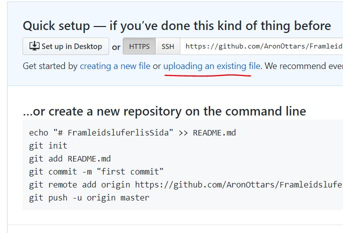
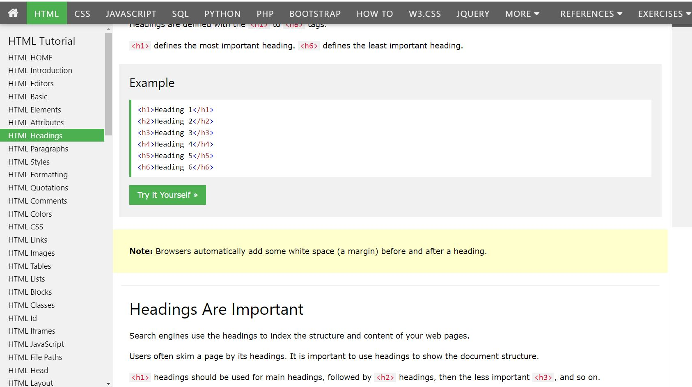
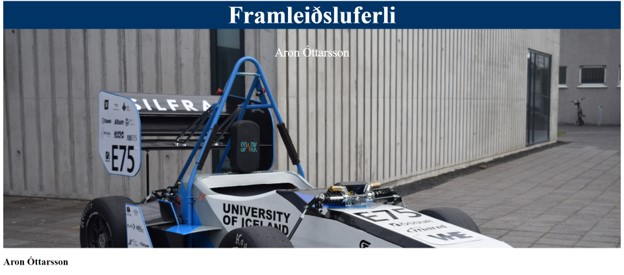
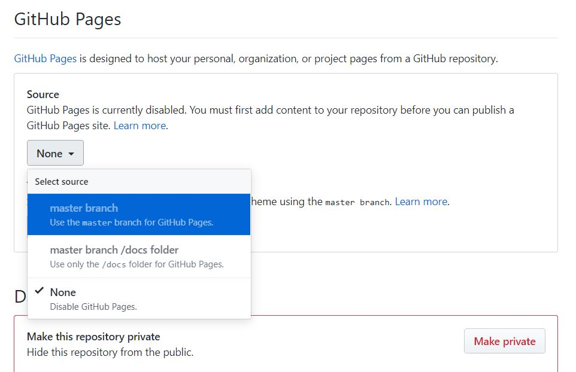
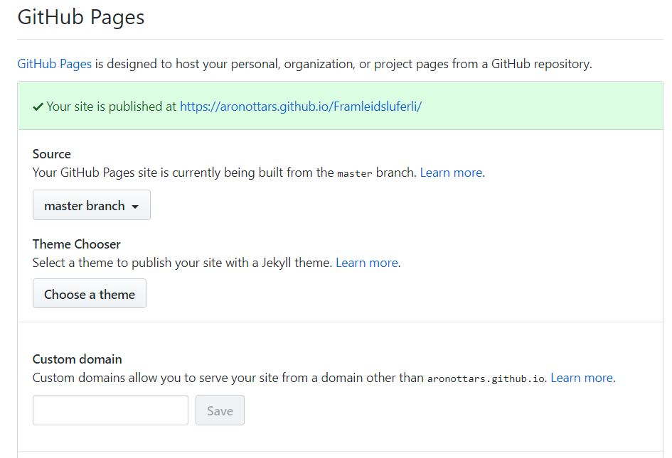
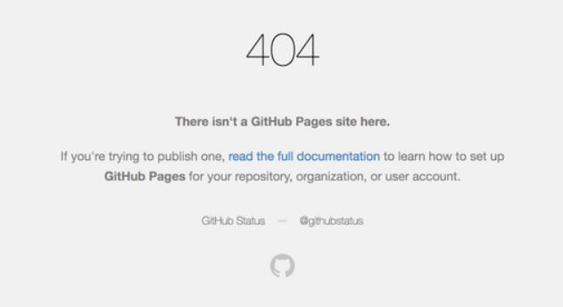

Ég er mjög hress einstaklingur sem leggur mikinn metnað í það sem ég tek mér fyrir hendur. Ég hef mörg áhugamál svo sem að spila á gítar og fá að vinna að einhverju í höndunum en ég hef einnig verið að æfa badminton í rúmlega 13 ár og var hluti af unglingalandsliðinu en hef minnkað við mig eftir að hafa byrjað í vélaverkfræði. Þá breyttist forgangsröðunin hjá mér og ég tók að mér spennandi verkefni í gegnum Team Spark, þróunar verkefni innan Háskóla Íslands þar sem nemendur hanna og smíða rafknúinn kappakstursbíl frá grunni. Ég byrjaði í loftflæði teymi liðsins sem sér um að hanna vængi bílsins, en eftir nokkrar vikur hætti hópstjórinn okkar og stjórnin ákvað að setja mig í þá stöðu. Það var mjög krefjandi og lærdómsríkt verkefni sem fólst í því að skipuleggja verkefni, hafa yfirsýn yfir hópnum og vera tengiliður við styrktaraðila sem hjálpa okkur við framleiðslu íhluta kerfisins. Eftir keppni úti á Spáni var ég beðinn um að vera í næstu stjórn, ég endaði á að taka að mér verkefnastjóra liðsins þar sem verkefnin fólust aðalega í að skipuleggja liðið í heild sinni, verkefni innan þess, hafa yfirsýn yfir verkefnum sem voru í gangi og skipuleggja keppnisferðirnar.
To those that are interested here is the source code for this website: Source files
Autocad
Inventor
Sjoða
Latex
Microsoft Office
Íslenska
Enska
Danska
Vélaverkfræði, 2017-2020
hæhæhæhæhæ
Eðlisfræði, 2012-2016
- Tók þátt í Boxinu, framkvæmdarkeppni framhaldsskóla þar sem liðið okkar vann þriðju verðlaun
- Viðurkenning fyrir framúrskarandi árangur í stærðfræði og ensku
Viðskiptaþróun, 2019-2019
Vann við að hanna og smíða kerfi sem notast við sólarorku til að framleiða raforku og varmaorku, þessi orka er notuð til að hita upp gróðurhús þar sem skynjarakerfi fylgist með öllu kerfinu til að safna gögnum um möguleika sólarorku á Íslandi.
Lager starfsmaður, 2017-2018
- Sumarvinna þar sem ég fékk að kynnast Marel og fá innsýn í verkfræði fyrirtæki.
I started by watching a video about how to host a website on Github, How to host a website on Github. I also downloaded gitbash to be able to upload files to my repository. I made a file called homepage.HTML and used gitbash to upload to the repository, I ran into some problems and was not able to upload my files to the repository through gitbash. I ended up by uploading the file through the upload file button on Github.
As I have never done anything with HTML the first step in making the website was to familiarize myself with the language, I did this through a great website provided to us by Hafliði, HTML for beginners, I spent a lot of time going through the HTML tutorial and learning everything I needed to know to make a "working" website.
After playing around with the basics of background colors, and putting images into the header and so forth I managed to create a not to bad looking header for the home page for my first time working with HTML.
I saved the file as homepage.html and uploaded to Github. To host the webpage I needed to go into the repository settings and scroll down to the "Github Pages" section, there I changed the source from "None" to "master branch"
Then the website got published.
Unforunately this did not work as well as I had hoped as when I opened the webpage I was greeted with a 404 page not found error.
After looking for the problem for a while I found out that the problem was that Github was searching for a file called index.html which is
customary to use for the homepage, as it did not find that file it assumed the webpage did not exist. After renaming the file I cheched the
website again and sure enough there it was!
I started making ajustments to the webpage and was using the Gitbuh text editor to start with, this was a terrible mistake as every time I wanted to add
something or change something, no matter how small or large, it took around 1-2 minutes for the changes to appear on the webpage. As I am very inexperienced
with HTML I was often changing very subtle things that I was not sure would work or not, then had to wait for about 5 minutes to check if it had worked.
Me and Máni decided to work together and try to figure this HTML thing out and he pointed me towards a HTML editor called Atom and told me that I could
connect my Github repository to Atom, edit my webpage locally and see changes instantly, then when I was happy I could push the update to github.
To give the webpage a more professional look I added a dropdown navigation bar, to do this I found a great video explaining the whole process: How to Create an HTML Dropdown Menu
Now I added some info about me at the top of this webpage, this proved to be more difficult than I had anticipated but I found out how to devide the page into columns using this webpage: Three columns HTML
To create the progress bars I used this webpage: Progress bar HTML
And to pick colors for the progress bar I used a HTML color picker: HTML color picker